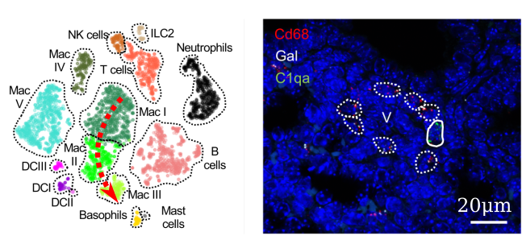
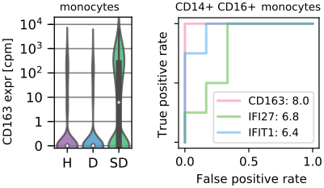
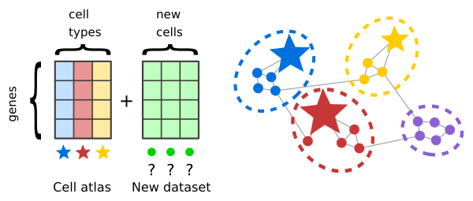

We give a voice to each single cell of the body to show that diversity is an asset, not a liability.
OPEN POSITIONS for two PhD students on (1) single cell sequencing and live cell imaging and (2) computational analysis of cell-cell communication networks. See details.
Projects
Fabilab is driven by people, not academic boundaries. We proudly work on biology, medicine, data science, computer science, network science and, sometimes, math.
Biology of the neonatal lung

The lung is a very special organ at birth, carrying pathogens and chemically reactive oxygen right into the center of our bodies. Our lab is mapping the staggering cellular diversity characterizing neonatal lungs in terms of gene expression (left) and anatomical location (right). A deeper understanding of this fundamental biological system will help us treat the lung conditions affecting thousands of newborn babies every year, such as bronchopulmonary dysplasia.
Immunology of severe dengue

Dengue is the most widespread mosquito-transmitted viral disease with 400 million infections every year. We are developing new approaches to understand what different parts of the immune system are doing during severe dengue. We identified CD163 as a biomarker for severity in monocytes and patented new antibodies against dengue virus.
Graph clustering of tumor transcriptomes

Cell atlases are huge collections of single cell transcriptomes that describe in extreme molecular detail the composition of human tissues. We are pioneering new algorithms to leverage cell atlases to rapidly elucidate the composition of tumor biopsies.
Network science
We develop igraph, a high-performance network analysis tool that underpins many software packages in single cell biology and beyond.